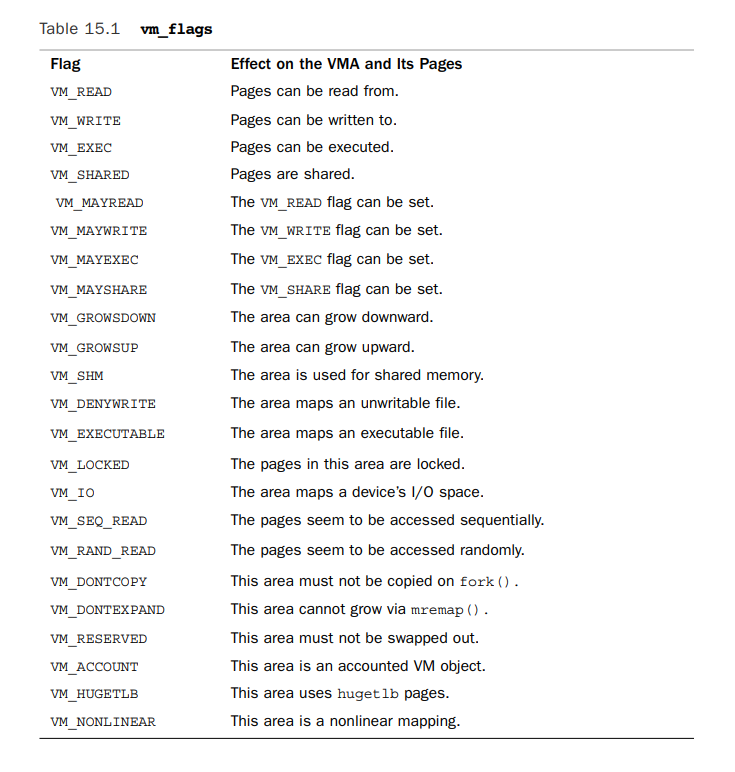
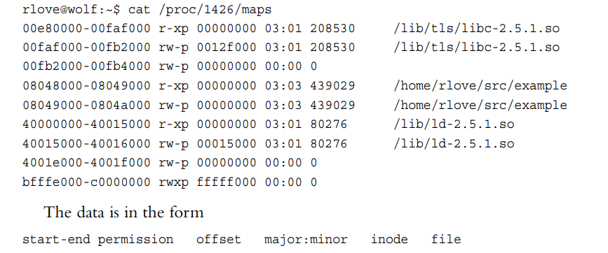
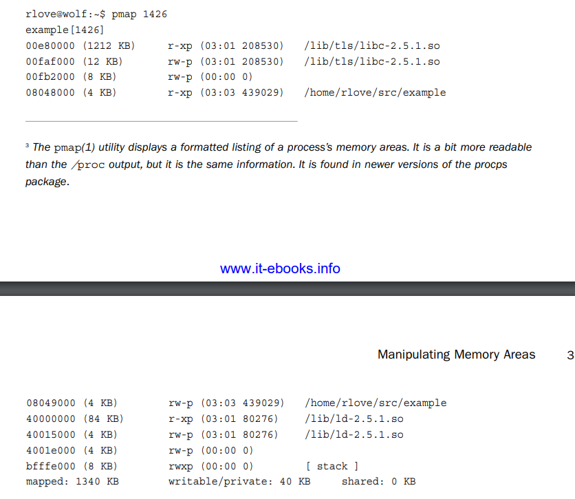
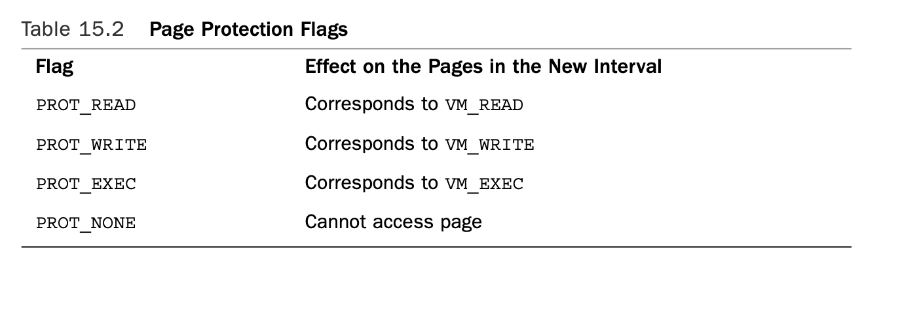
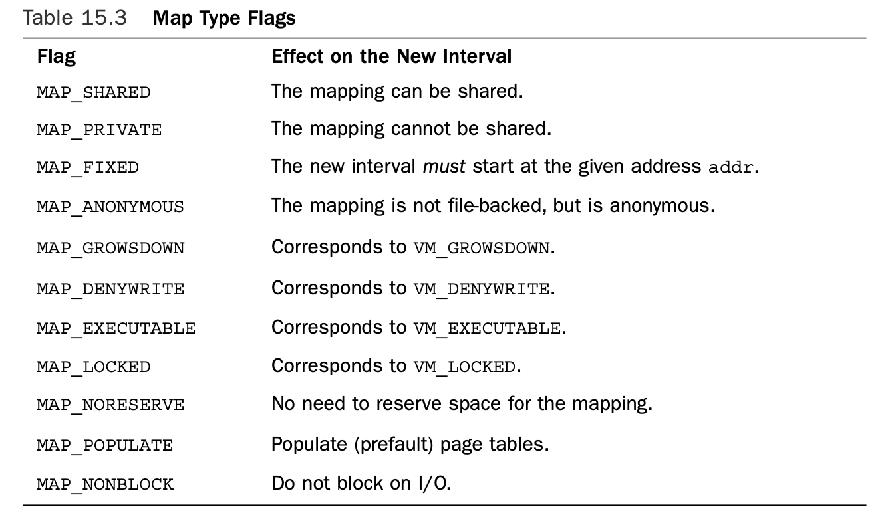

Address Space
一个进程的地址空间是architecture-dependent,32位机是0 ~ 1<<32-1。这是个线性地址空间。有些操作系统会提供分段的地址空间，不过linux提供的是线性地址空间。每个进程的地址空间是完全独立的，与别的进程没有关系。两个进程地址空间中的相同地址处可以存放不同的数据。同时，多个进程可以共享地址空间，比如一组线程。
虽然进程的地址空间，比如32位机器，是0-4GB,但是进程并不能访问这其中任意地址。它只能访问其中的一些段，比如08048000-0804c000，这些能访问的段叫做memory areas。进程可以动态的添加和删除memory areas。 Memory areas也有相应的访问权限，比如readable, writable, and executable。进程在访问memory areas时只能执行权限允许的访问动作。如果进程访问的地址不在其可访问的memory areas中，或者访问的动作不被允许，则cpu raise Segmentation Fault异常，内核kill该进程。
进程的memory areas一般都有哪些？
- A memory map of the executable file’s code, called the text section.
- A memory map of the executable file’s initialized global variables, called the data section.
- A memory map of the zero page (a page consisting of all zeros, used for purposes such as this) containing uninitialized global variables, called the bss section. (bss 的意思是 block started by symbol. 未初始化的变量并不会存储在可执行文件中，因为它并没有初始值。但是c要求未初始化的变量有zero default values,因此内核在加载未初始化的全局变量时会分配zero page，而不是在可执行文件中存储0值)
- A memory map of the zero page used for the process’s user-space stack.
- An additional text, data, and bss section for each shared library, such as the C library and dynamic linker, loaded into the process’s address space.
- Any memory mapped files.
- Any shared memory segments.
- Any anonymous memory mappings, such as those associated with malloc().(Newer versions of glibc implement malloc() via mmap(), in addition to brk().)
The Memory Descriptor
一个进程的地址空间被表示为mm_struct结构体，定义在
struct mm_struct {
struct vm_area_struct *mmap; /* list of memory areas */
struct rb_root mm_rb; /* red-black tree of VMAs */
struct vm_area_struct *mmap_cache; /* last used memory area */
unsigned long free_area_cache; /* 1st address space hole */
pgd_t *pgd; /* page global directory */
atomic_t mm_users; /* address space users */
atomic_t mm_count; /* primary usage counter */
int map_count; /* number of memory areas */
struct rw_semaphore mmap_sem; /* memory area semaphore */
spinlock_t page_table_lock; /* page table lock */
struct list_head mmlist; /* list of all mm_structs */
unsigned long start_code; /* start address of code */
unsigned long end_code; /* final address of code */
unsigned long start_data; /* start address of data */
unsigned long end_data; /* final address of data */
unsigned long start_brk; /* start address of heap */
unsigned long brk; /* final address of heap */
unsigned long start_stack; /* start address of stack */
unsigned long arg_start; /* start of arguments */
unsigned long arg_end; /* end of arguments */
unsigned long env_start; /* start of environment */
unsigned long env_end; /* end of environment */
unsigned long rss; /* pages allocated */
unsigned long total_vm; /* total number of pages */
unsigned long locked_vm; /* number of locked pages */
unsigned long saved_auxv[AT_VECTOR_SIZE]; /* saved auxv */
cpumask_t cpu_vm_mask; /* lazy TLB switch mask */
mm_context_t context; /* arch-specific data */
unsigned long flags; /* status flags */
int core_waiters; /* thread core dump waiters */
struct core_state *core_state; /* core dump support */
spinlock_t ioctx_lock; /* AIO I/O list lock */
struct hlist_head ioctx_list; /* AIO I/O list */
};
mm_users表示当前有多少进程共享该地址空间，比如两个线程共享该地址空间，则mm_users为2 mm_count表示mm_struct的引用数。无论有多少进程共享该地址空间，mm_count只能增加1.如果有内核需要访问该地址空间，mm_count会增加1.当所有进程都不在使用该地址空间，也就是mm_users变为0时，mm_count会减1，当mm_count等于0时，表示该地址空间不再被访问，可释放。
mmap存储的是所有memory area的链表,可使用该链表traverse all memroy area。该链表的地址是升序的。 mm_rb存储的是所有memory area的rbtree,more suitable for search. mmlist连接内核中的所有mm_struct到doubly linked list。该链表的第一个元素是init_mm memory descriptor,是init进程的地址空间。
进程的mm_struct的指针存储在task_struct中的mm字段上。 mm_struct从mm_cachep slab cache中分配。
当进程退出时，相应mm_struct的mm_users会减1，如果mm_users等于0，则mm_count会减1，如果mm_count等于0，则该mm_struct会被释放，也就是返回mm_cachep slab
内核线程没有进程地址空间，因此其mm字段的指针为NULL，但是内核线程在运行时还是需要mm中的一些数据，比如page table中的kernel space 部分，这部分的数据对所有的进程而言都是一样的。因此内核线程在运行时，访问的是之前运行的进程的mm数据。其task_struct中的active_mm指向之前进程的mm.
Virtual Memory Area
memroy area 又叫做 virtual memory area,(VMA),由结构体vm_area_struct表示，定义在linux/mm_types.h文件中
struct vm_area_struct {
struct mm_struct *vm_mm; /* associated mm_struct */
unsigned long vm_start; /* VMA start, inclusive */
unsigned long vm_end; /* VMA end , exclusive */
struct vm_area_struct *vm_next; /* list of VMA’s */
pgprot_t vm_page_prot; /* access permissions */
unsigned long vm_flags; /* flags */
struct rb_node vm_rb; /* VMA’s node in the tree */
union { /* links to address_space->i_mmap or i_mmap_nonlinear */
struct {
struct list_head list;
void *parent;
struct vm_area_struct *head;
} vm_set;
struct prio_tree_node prio_tree_node;
} shared;
struct list_head anon_vma_node; /* anon_vma entry */
struct anon_vma *anon_vma; /* anonymous VMA object */
struct vm_operations_struct *vm_ops; /* associated ops */
unsigned long vm_pgoff; /* offset within file */
struct file *vm_file; /* mapped file, if any */
void *vm_private_data; /* private data */
};
vm_flags

The VM_IO flag specifies that this memory area is a mapping of a device’s I/O space. This field is typically set by device drivers when mmap() is called on their I/O space. It specifies, among other things, that the memory area must not be included in any process’s core dump. The VM_RESERVED flag specifies that the memory region must not be swapped out. It is also used by device driver mappings. The VM_SEQ_READ flag provides a hint to the kernel that the application is performing sequential (that is, linear and contiguous) reads in this mapping.The kernel can then opt to increase the read-ahead performed on the backing file.The VM_RAND_READ flag specifies the exact opposite: that the application is performing relatively random (that is, not sequential) reads in this mapping.The kernel can then opt to decrease or altogether disable read-ahead on the backing file.These flags are set via the madvise() system call with the MADV_SEQUENTIAL and MADV_RANDOM flags, respectively. Read-ahead is the act of reading sequentially ahead of requested data, in hopes that the additional data will be needed soon. Such behavior is beneficial if applications are reading data sequentially. If data access patterns are random, however, read-ahead is not effective.
vm_ops
vm_ops代表该memroy area instance的操作表。memory area可以有多种类型，比如文件映射memory area，匿名映射memory area,其具体地操作可能会有所区别。
定义在
struct vm_operations_struct {
void (*open) (struct vm_area_struct *);
void (*close) (struct vm_area_struct *);
int (*fault) (struct vm_area_struct *, struct vm_fault *);
int (*page_mkwrite) (struct vm_area_struct *vma, struct vm_fault *vmf);
int (*access) (struct vm_area_struct *, unsigned long ,
void *, int, int);
};
- void open(struct vm_area_struct *area) This function is invoked when the given memory area is added to an address space
- void close(struct vm_area_struct *area) This function is invoked when the given memory area is removed from an address space.
- int fault(struct vm_area_sruct area, struct vm_fault vmf) This function is invoked by the page fault handler when a page that is not present in physical memory is accessed.(can't translate virtual address to physical address)
- int page_mkwrite(struct vm_area_sruct area, struct vm_fault vmf) This function is invoked by the page fault handler when a page that was read-only is being write.
- int access(struct vm_area_struct vma, unsigned long address, void buf, int len, int write) This function is invoked by access_process_vm() when get_user_pages() fails.
我们看一个具体进程的memroy areas 该进程代码如下
int main(int argc, char *argv[])
{
return 0;
}
/proc/  
整个地址空间使用1340KB内存，但只有40KB是private and writable. 如果某个memory region是shared or nonwritable,该memroy region在内存中只会有一份拷贝。 Note the memory areas without a mapped file on device 00:00 and inode zero.This is the zero page, which is a mapping that consists of all zeros. By mapping the zero page over a writable memory area, the area is in effect “initialized” to all zeros.This is important in that it provides a zeroed memory area, which is expected by the bss. Because the mapping is not shared, as soon as the process writes to this data, a copy is made (à la copy-on-write) and the value updated from zero.
mmap()&do_mmap()
do_mmap()函数要么创建新的vma,如果创建的vma与存在的vma地址相邻，并且属性权限也相同，他们会合并成一个vma
The do_mmap() function is declared in
unsigned long do_mmap(struct file *file, unsigned long addr,
unsigned long len, unsigned long prot,
unsigned long flag, unsigned long offset)
file 为要映射的文件，如果是匿名映射，file为NULL。如果不为NULL,该映射叫做file-backed mapping. 如果file不为NULL,offset表示从文件哪里开始映射。 len表示要映射的长度 addr 参数如果不为0，表示the initial address from which to start the search for a free interval. prot 表示vma中pages 的access permission,如下

flags 可设置vma的属性，如下
user-space的进程可以使用mmap系统调用，该系统调用实际就是运行do_mmap
void * mmap2(void *start, size_t length,
int prot, int flags, int fd, off_t pgoff)
munmap()&&do_munmap()
int do_munmap(struct mm_struct *mm, unsigned long start, size_t len)
int munmap(void *start, size_t length)
asmlinkage long sys_munmap(unsigned long addr, size_t len)
{
int ret;
struct mm_struct *mm;
mm = current->mm;
down_write(&mm->mmap_sem);
ret = do_munmap(mm, addr, len);
up_write(&mm->mmap_sem);
return ret;
}
Page Tables
linux使用多层页表，这可以大大减少页表所占用的内存。 top-level page table是页全局目录，page global directory(PGD),其中包含pgd_t类型的表项。大多数机子上，pgd_t的类型是unsigned long second-level page tables是 page middle directory,entry 类型是pmd_t 最后一层就叫做page tables,其entry类型是pte_t,指向该virtual address所对应的物理页
虚拟地址到物理地址的转换是硬件自动进行的，但是linux也要提前设置好相关的宏
虚拟地址到物理地址的转换，每次都走一遍多层页表，总体还是比较耗时的。tlb(translation lookaside buffer)会cache virtual-to-physical mapping